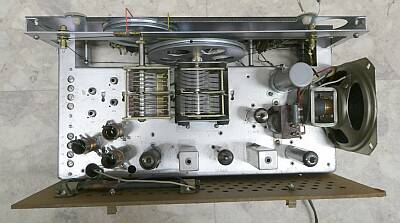 |
上手にコンパクトにまとめてあります
整然と美しいレイアウトです
ＶＣ類は、ブッシングで浮かせて取り付けられています |
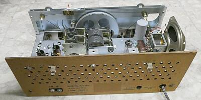 |
リアパネル
以下の用意があります
・ＡＣ入力
・Ｓメーターゼロ点調整ＶＲ
・アンテナ入力端子
ロッドアンテナのホルダーは付いていますが、入手した時点では、アンテナは付属していませんでした
|
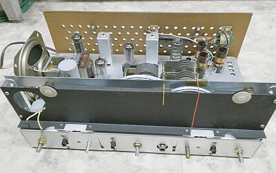 |
写真右から
１２ＢＥ６ ＯＳＣ／ＭＩＸ
１２ＢＡ６ ＩＦ ＢＦＯ
１２ＡＶ６ 検波、ＡＶＣ、ＡＮＬ、ＡＦ-Ｐｒｉ
５０Ｃ５ ＡＦ-Ｍａｉｎ
トーン切り替えが意外と効果あり
ＡＦ出力は十二分 |
| |
|
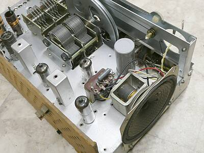 |
口径１０ｃｍのスピーカーが内蔵されています
トランスレスですので、コンパクトに仕上がっています
|
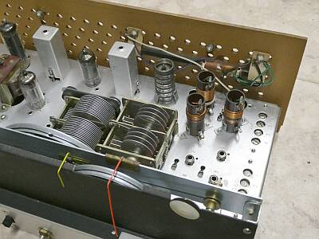 |
リアパネルに、ＢＣバンド用のバーアンテナが取り付けられています
３つ見えているコイルは、アンテナ入力コイルです |
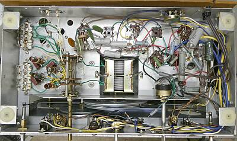 |
シャーシ底面
ＲＦ可変コンデンサには、タイトトリマが採用されています
左端の群は、ＯＳＣコイルです
バンドＳＷや、ＡＦ-ＶＲなどは、パネルに直接ではなく、折り曲げたシャーシに取り付けられています |
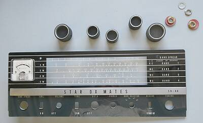 |
フロントパネル分解
メーター交換を終えたところです |
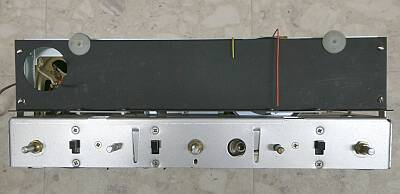
フロントパネルを取り外した状態です |
メーターは壊れていたため取り外しています
ジャンク箱を探して、交換できそうなメーターを探しました
なにせ昨今のご時世で、同等に使えるものが簡単に入手できません
幸いにも、同じ形状の３８型のメーターが見つかりました（フロント部の厚さが少し厚いだけで、メーターパネルもそのまま交換できました）
ただ高感度（多分１００μA）なためシャント抵抗を別途用意しました |
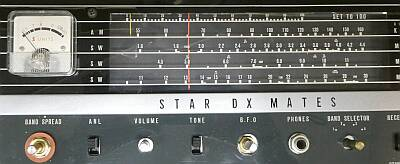 |
手持ちのメーターを取り付け、フロントパネルを仮取り付けしたところ |
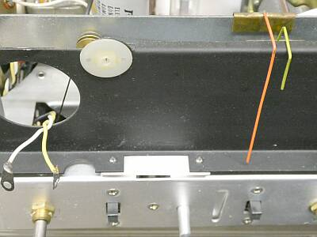
メーターは、入れ替えのため取り外しています |
カーソルが二つ
黄色が、スプレッドダイヤル
赤が、メインダイヤル
ダイヤル最上段に０－１００のスプレッドダイヤル目盛りが用意されています
１００にセットするように書かれています
この状態でハムバンドの上限にメインダイヤルを合わせ、低いほうに向かってスプレッドダイヤルで選局する方法です
長方形の白い部分は、照明ランプのカバーというかフィルタに相当する部分です
点照明にならない工夫がされています |
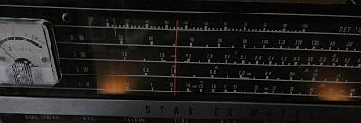 |
暗がりでの照明はこのようになります |
|
作業中に、漏電ブレーカーが落ちました
やるかなと思ってはいましたが案の定・・・
ＡＣラインに関係したオイルコンデンサを２個交換、絶縁不良です
ＩＦ周りのバイパスコンデンサに、本来セラミックコンデンサかなと思うところにもオイルコンデンサが使ってありましたので、ここはセラミックコンデンサに交換しました（やはり絶縁不良が見られました）
ＩＦ／ＢＦＯ動作が安定になりました
|
特徴的なのはＢＦＯ回路
ＩＦアンプのサプレッサーグリッドを浮かすことで一種の自己発振です
ＢＦＯ用に発振回路を設けなくて済むという簡易な方策です（５球スーパーの機器構成で、ビートをかけてＣＷが聞こえる）
同様の使い方としては、Ｈａｌｌｉｃｒａｆｔｅｒｓ ＳＸ-１４０ でも採用されています（こちらは、ＲＦゲイン調整と合わせて、ＳＳＢが復調できるくらい安定な動作）
お話を戻して、本機ではサプレッサグリッドから単線で４０ｃｍ以上ＶＲまで配線してあったので、ここは細い同軸ケーブルに変更しました
電源の傍を通っていたことにも起因するかもしれませんが、濁ったビート音から改善がありました
それでも本機は残念ながら、とてもとてもSSBが復調できる様子はありません
ＣＷさえも強力な信号には厳しい・・・ＲＦゲイン調整が別途必要な状況です
受信感度などについて
慎重に調整した結果ですが、７．１ＭＨｚ ＡＭ３０％変調で、Ｓ／Ｎ１０ｄｂを得るのに６μＶの入力と、結構高感度です
またＢＦＯをＯＮにして、発振手前まで上手く調整すると、４μＶ程度でＳ／Ｎ１０ｄｂが得られました
いわば再生方式の受信です
同時に、選択度が向上します
これらのことは新製品紹介記事にも記してありました
ただ実践時に、どれだけうまく調整して対応できるかは、オーナー次第でしょう
その昔、３．５ＭＨｚ帯ＡＭで電波を出しだしたころ、５球スーパー改造受信機を使っているというシャック紹介を多く受けましたが、確かに実用できそうです
|